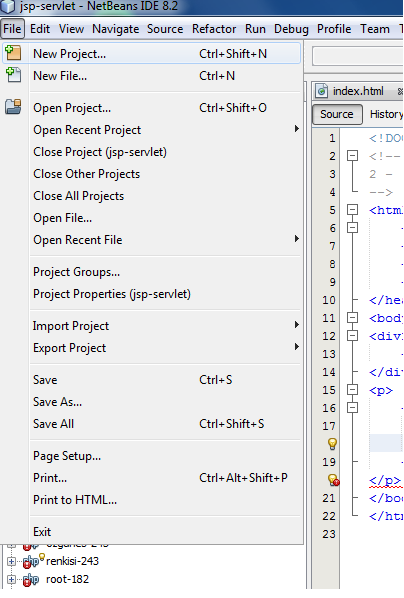
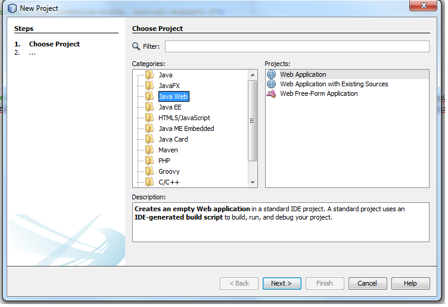
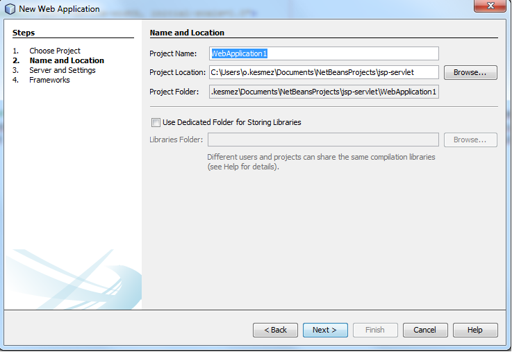
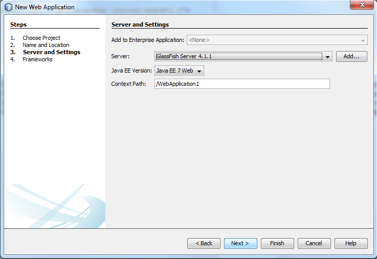
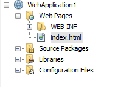
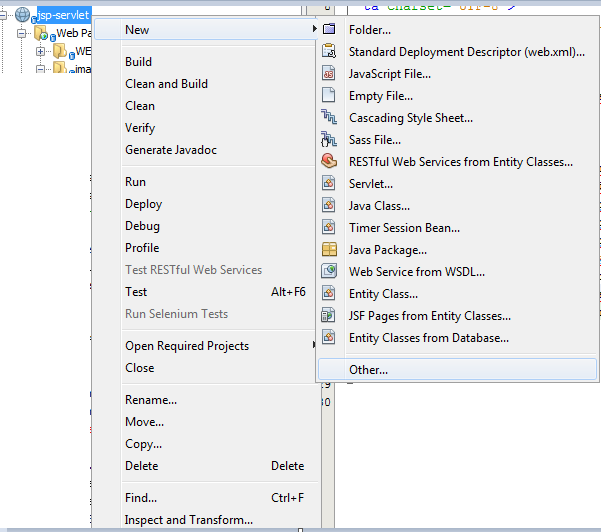
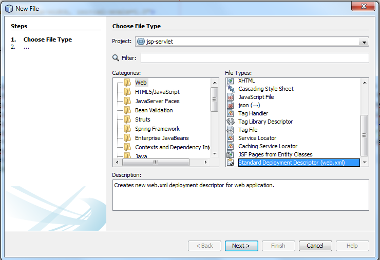

3 - (Servlet - Jsp) Netbeans Derleyicisi İle Web Projesi Oluşturma
- Öncelikle https://netbeans.org/ adresine gidilerek En son Netbeans Sürümü İndirilir Bilgisayar Üzerine Yüklenir.
- Yükleme tamamlandıktan sonra Netbeans açılır. Üst menülerden File Sekmesi takip edilerek New Project tıklanır
- 
- Açılan Pencerede Categories kısmından Java Web ve Projects kısmından Web Aplication seçilir ve next tıklanır
- 
- Açılan Pencerede Proje ismimizi ve local bilgisayarımızda dosyaların saklanacağı alanı belirliyoruz ve next diyoruz.
- 
- Açılan Pencerede Java EE versiyonunu ve server uygulamamızı belirliyor ve Finish diyoruz.
- 
- Uygulamamız Ekranın Sol kısmında oluşmuş olacak.
- 
- Son olarak Java Web Uygulamalarımızda konfigirasyon işlemleri için kullanmakta olduğumuz web.xml dosyamızı oluşturuyoruz.
Dosyayı oluşturmak için sol kısımda oluşan projemizin ismine sağ tıklıyoruz. New->Other sekmesini takip ediyoruz.
Açılan Pencerenin Categories Kısmından Web seçilirken Projects kısmından web.xml seçiyoruz.
Next dediğimiz anda bize bir pencere açılacak ve web.xml dosyasını oluşturacağımız dosya yolunu gösterecek Finish diyoruz ve web.xml oluşturulmuş oluyor.
- 
- 